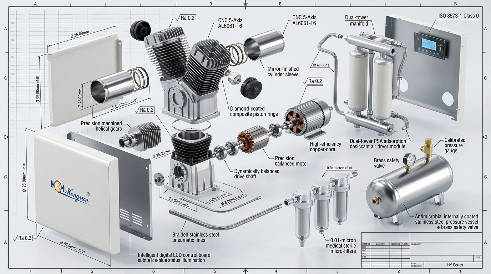
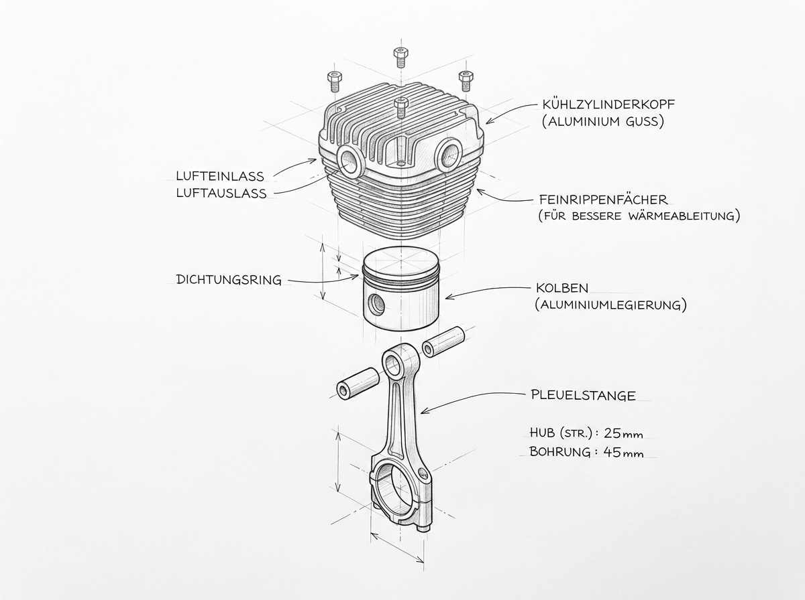
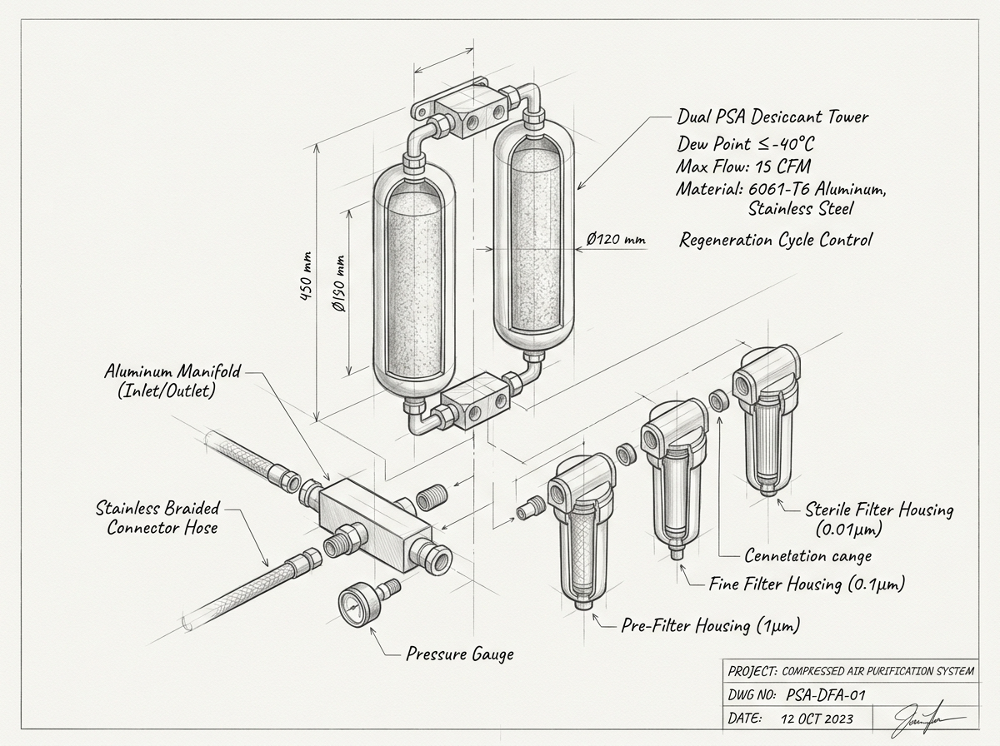
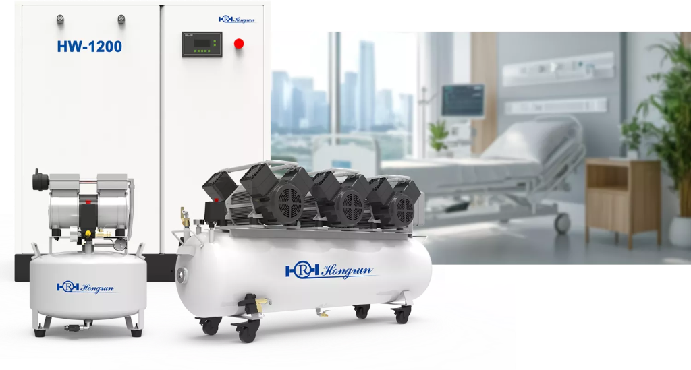
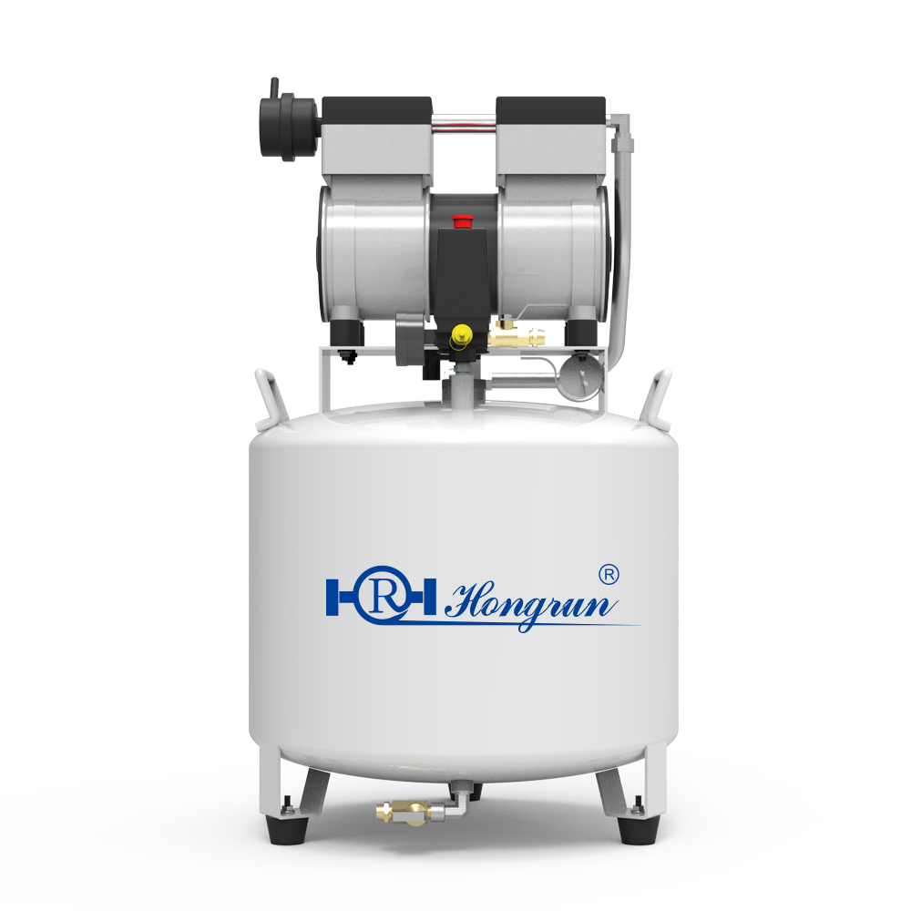
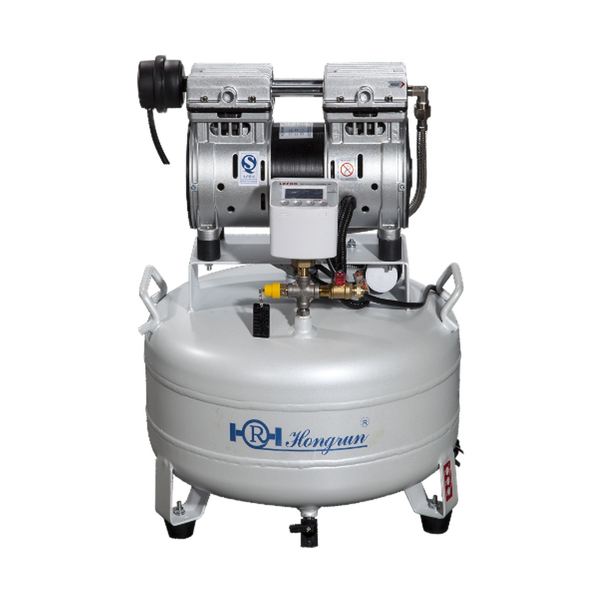
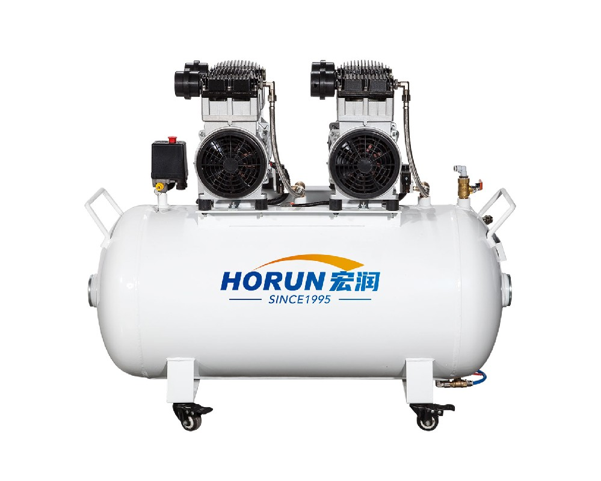

Executive Summary & Engineering Key Points
- Zero Hydrocarbon Purity: 100% oil-free compression eliminates volatile hydrocarbon vapor that causes up to 38% loss in composite resin shear bond strength during restorative procedures.
- Wobble Piston Kinematics: Eliminates the gudgeon wrist-pin. Self-aligning single-piece rod reduces reciprocating mass by 42% and mechanical friction by 35% compared to traditional crosshead compressors.
- Nano-Antibacterial Receiver: Electrostatic composite polymer-ceramic inner lining permanently passivates the tank wall, eliminating rust flaking and secondary bacterial biofilm formation.
- Multi-Host Smart Redundancy: Intelligent alternating control (HYT / HYTG Series) guarantees N+1 hospital-grade continuous air supply with zero clinical downtime during single-pump maintenance.
1. The Clinical Imperative: Why Medical Dental Compressed Air Demands ISO 8573-1 Class 0 Purity
In modern dental and medical operatory environments, compressed air is not merely a utility power source—it is an active pharmacological and medical instrument delivery medium. Dental turbines operating at rotational speeds exceeding 400,000 RPM, ultrasonic scalers, air abrasion sandblasting units, and sensitive 3-way syringes directly inject pressurized gas into open oral wounds, root canals, and prepared dentin tubules.
When conventional oil-lubricated compressors or low-grade compressors with failing filtration are used, microscopic oil aerosol droplets (0.01–5.0 μm) inevitably penetrate the pneumatic lines. This leads to three severe clinical consequences:
Adhesion & Bonding Failure
Micro-droplets of oil deposited on etched enamel create a hydrophobic barrier, preventing bonding resin monomer penetration and causing premature restoration detachment.
Turbine Bearing Seizure
Hydrocarbon sludge mixes with moisture to form gummy varnishes on micro-ceramic bearings, increasing friction, elevating handpiece head temperatures, and causing premature turbine burnout.
Cross-Infection & Biofilm
Uncoated iron tanks corrode under high-humidity conditions. Rust particulate and condensation sludge become breeding grounds for opportunistic pathogens such as Legionella pneumophila.
2. International Regulatory Frameworks: Purity Thresholds & Classification
To eliminate medical risks, global medical device authorities mandate rigorous contamination ceilings across three core parameters: Total Oil Content, Solid Particulate Size, and Pressure Dew Point (Moisture).
| Standard & Jurisdiction | Total Oil Limit (mg/m³) | Solid Particles (μm) | Pressure Dew Point (°C) | Clinical Target Application |
|---|---|---|---|---|
| ISO 8573-1:2010 Class 0 (Hongrun) | 0.00 mg/m³ (Non-detectable) | ≤ 0.01 μm (99.999% HEPA) | ≤ -40°C (Dual-Tower PSA) | Highest Global Tier |
| ISO 8573-1 Class 1 | ≤ 0.01 mg/m³ | ≤ 0.1 μm | ≤ -70°C to -40°C | Critical Pharmaceutical / Precision |
| HTM 02-01 (UK NHS / Europe) | ≤ 0.1 mg/m³ | ≤ 1.0 μm | ≤ -46°C @ atmospheric | Hospital Medical Air / Surgical Pipeline |
| GB 50751-2012 / WS 507-2016 (China) | ≤ 0.1 mg/m³ | ≤ 0.5 μm | ≤ -20°C (Dental/Endoscopy) | Hospital Central Gas & Endoscope Drying |
3. Deep Engineering Teardown: Kinematic Mechanics of the Hongrun HY Series
Unlike converted industrial reciprocating compressors that rely on splash-lubricated sumps or fragile oil-free piston rings, the Hongrun HY Series (ZB100 / ZB200 / ZB300) utilizes an uncompromising, dedicated medical wobble-piston (摇摆活塞) architectural framework.

Figure 1.1: Precision Exploded Engineering Schematic of Hongrun HY Wobble-Piston Pump Head, Saint-Gobain Composite Piston Rings, Flapper Reed Valve, and Nano-Coated Vessel (Click to Zoom).

Figure 1.2: Precision Wobble Piston & Finned Cylinder Blueprint
Integral aluminum alloy finned cylinder sleeve for rapid heat dissipation and zero thermal distortion.

Figure 1.3: Dual-Tower PSA Desiccant Molecular Sieve System
Delivering constant -40°C pressure dew point and 0.01μm absolute sterile particulate filtration.
Saint-Gobain PTFE Composite Ring
Piston rings are engineered with high-temperature, wear-resistant self-lubricating PTFE composite polymers imported from Saint-Gobain France. The material maintains elasticity across -40°C to +220°C with an ultra-low dynamic friction coefficient (μ ≤ 0.08), eliminating the need for crankcase lubricating oil.
Nano-Coated Anti-Corrosion Tank
The interior of the 24L–200L pressure vessels undergoes automated phosphating passivation followed by electrostatic spraying of high-density nano-ceramic polymer composite coatings. This forms an impermeable barrier against acidic moisture condensation, preventing internal oxidation and bacteriological colonization.
Intelligent Alternating Redundancy
For multi-pump installations (HYT-200, HYTG-300, HYT-400, HYT-500), the smart controller dynamically balances runtime hours across pump heads and coordinates staggered zero-pressure electromagnetic unloader startups. In the event of a single-head anomaly, the backup units seamlessly carry full clinical loads.
4. Comparative Engineering Benchmark: Hongrun vs. Generic Market Compressors
| Engineering Dimension | Hongrun HY Series (Medical Tier) | Generic Domestic Assembly | Imported High-Cost Brands |
|---|---|---|---|
| Core Pump R&D | Proprietary Wobble-Piston Patents (ZB Series) | Off-the-shelf OEM Public Castings | Proprietary (High Premium) |
| Tank Internal Surface | Electrostatic Nano Composite Coating (Anti-Rust) | Raw Carbon Steel / Uncoated (Rust Risk) | Coated or Stainless Steel |
| Piston Ring Friction Material | Saint-Gobain High-Wear Self-Lubricating PTFE | Generic Virgin PTFE (Fast Wear <2000 hrs) | Proprietary PTFE |
| Acoustic Profile (@1m) | ≤ 65 dB(A) (Quiet Point-of-Use) | 72–78 dB(A) (Vibration & Resonance) | ≤ 62–66 dB(A) |
| Regulatory Accreditation | ISO 13485, CE MDR, NMPA Class II Medical | Industrial Only / Non-Medical | ISO 13485, CE, FDA |
| 5-Year Total Cost of Ownership (TCO) | Optimal (High Efficiency + Low Spares Cost) | Unpredictable (Frequent Head Failures) | Excessive (300–500% Parts Markup) |
5. Clinical Sizing Guide: Mathematical Flow Calculations for 1 to 50 Dental Chairs
Proper pneumatic sizing requires calculating the Total Free Air Delivery (FAD) under peak simultaneous operational demand. Under international dental clinic engineering design guidelines (HTM 02-01 & ISO 10637), the required compressor capacity is formulated as:
qchair (Standard Demand): 50 L/min @ 0.5 MPa (Turbine + 3-way Syringe)
qsurg (Surgical/High Demand): 65–80 L/min (Implant / Micro-motor)
Ksim (Simultaneity Factor): 1.0 (1 chair) → 0.70 (5 chairs) → 0.55 (15 chairs) → 0.40 (50 chairs)
Ksafety (Duty Cycle Factor): 1.25 (Ensures ≤ 65% compressor motor on-cycle)
Hongrun HY / HYT / HYTG Medical Compressor Portfolio (1–12 Chairs)

Figure 1.4: Complete scalable family architecture—from Point-of-Care single-operatory units (HY-100 / HY-200 / HY-300) to twin and quad redundant central units (HYT-200 / HYTG-300 / HYT-400 / HYT-500).

HY-100 Point-of-Care
0.55 kW · 100 L/min · 24L Tank · 22.5 kg

HY-200 Standard
0.75 kW · 150 L/min · 32L Nano-Tank · 26.5 kg

HY-300 High-Output
1.10 kW · 200 L/min · 50L Tank · 45.0 kg

HYTG-300 Twin Redundant
2.20 kW (1.1×2) · 400 L/min · 90L Tank
| Recommended Model | Chair Scale | Power (kW) | Max Flow (L/min) | Tank (L) | Noise (dB) | Voltage | Primary Facility Typology |
|---|---|---|---|---|---|---|---|
| HY-100 | 1 Chair | 0.55 kW (ZB100) | 100 L/min | 24 L | ≤ 65 dB | 220V | Private Solo Practice / Mobile Clinic |
| HY-200 | 1–2 Chairs | 0.75 kW (ZB200) | 150 L/min | 32 L | ≤ 65 dB | 220V | Standard Two-Chair Dental Operatory |
| HY-300 | 2–3 Chairs | 1.10 kW (ZB300) | 200 L/min | 50 L | ≤ 65 dB | 220V | High-Volume Restorative & Orthodontic Suite |
| HYT-200 | 2–4 Chairs | 1.50 kW (0.75×2) | 300 L/min | 60 L | ≤ 65 dB | 220V | Twin-Host Redundant Clinic Station |
| HYTG-300 | 3–5 Chairs | 2.20 kW (1.10×2) | 400 L/min | 90 L | ≤ 65 dB | 220V | Multi-Room Surgery + Lab Handpieces |
| HYT-400 | 5–8 Chairs | 3.30 kW (1.10×3) | 600 L/min | 120 L | ≤ 68 dB | 380V | Specialized Dental Hospital Department |
| HYT-500 | 8–12 Chairs | 4.40 kW (1.10×4) | 800 L/min | 200 L | ≤ 68 dB | 380V | Regional Oral Care Center / Dental Polyclinic |
| HBG-400 / 800 / 1200 | 15–50+ Chairs | 3.0–9.0 kW (4V) | 500–1,500 L/min | 150–500 L | ≤ 65 dB | 380V | Class II Medical Plant Room Central Station |
6. Expanded Hospital Applications: Endoscopy Centers & CSSD Sterilization
Endoscopy Reprocessing (WS 507-2016)
Gastrointestinal & Bronchoscopy CentersFollowing automated high-level disinfection, endoscope lumens require immediate pressurized air purging (0.2–0.4 MPa). Even trace oil mist creates irreversible chemical residues inside flexible biopsy channels. Hongrun Class 0 air eliminates channel degradation and guarantees total moisture evacuation.
Central Sterile Supply (CSSD WS 310.2)
Hospital Sterilization & PackagingSterilizer chamber air purge, optical laparoscopic instrument internal channel blowdown, and robotic arm pneumatic seal operations strictly forbid oil hydrocarbons. Hongrun integrated stations deliver ≤ -40°C dew point dry air to prevent autoclave staining and vacuum pack punctures.